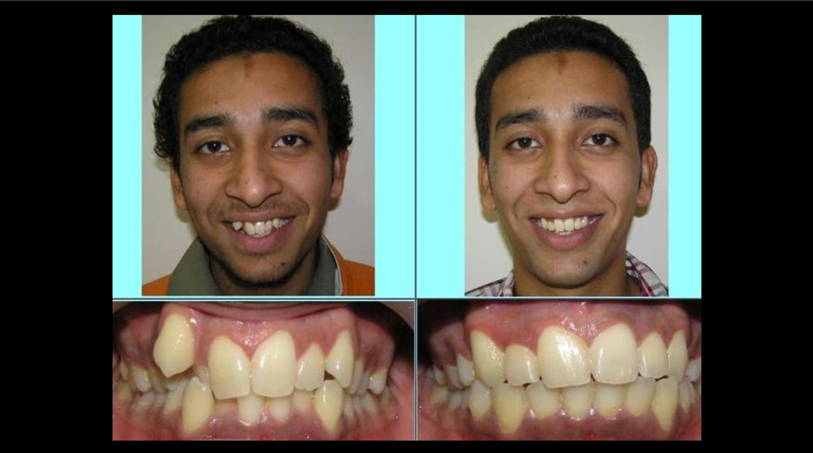

Orthodontics is the branch of dentistry that corrects irregularities of the teeth, jaws and face. The orthodontist re-positions teeth and jaws that are not in their correct alignment and position. Orthodontists specialize in not only the cosmetic appearance of your child’s teeth but also in the overall health and long-term functionality. It is important to address orthodontic dental issues early on. Left untreated orthodontic problems can result in tooth decay and the loss of teeth. Without a healthy tooth and jaw structure, normal speech developments are negatively affected along with additional health issues
Adults often question if they are candidates for orthodontics and the answer is a definitive yes; it is never too late to address neglected teeth that are in need of orthodontic treatment. Crooked, misaligned teeth are more difficult to take care of and keep clean. With straight teeth, the results include healthier teeth with reduced chances of gum loss and decay. Also when the jaw is misaligned, teeth do not line up properly and can result in advanced wear of the tooth surfaces eventually leading to possible denture need. Straight teeth reduce or eliminate many additional oral health risks.
One way in which adult orthodontics is different from children’s orthodontics is that unlike children, adult’s bones are not in a state of change. Because of this difference there is slight increase in treatment time for the bones to shift. To counteract the increased treatment time, there are many advancements in orthodontic braces that result in reduced treatment time and are still esthetically pleasing. To find out more about adult orthodontics and if they can improve your oral health contact us.
{kind=link}